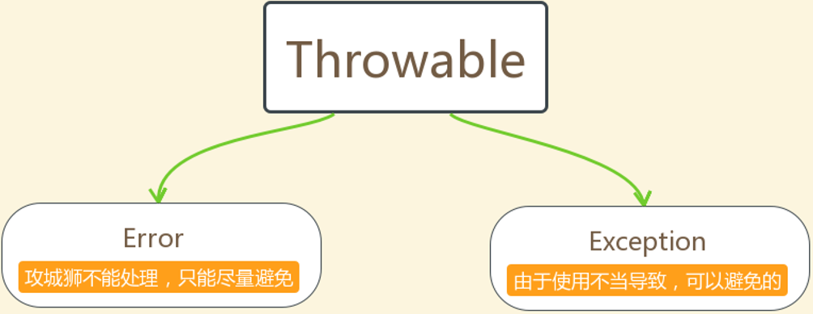
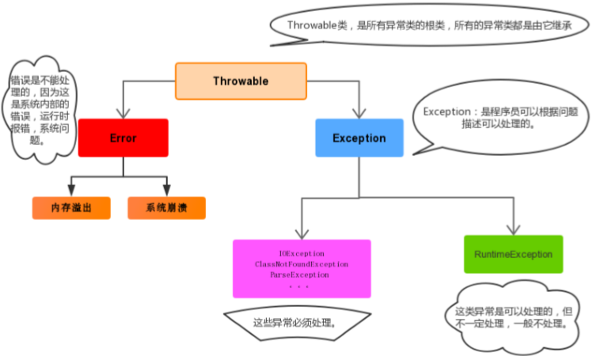

异常的概念
异常，就是不正常的意思。在生活中:医生说,你的身体某个部位有异常,该部位和正常相比有点不同,该部位的功能将受影响.在程序中的意思就是：指的是程序在执行过程中，出现的非正常的情况，终会导致JVM的非正常停止
注意:在Java等面向对象的编程语言中，异常本身是一个类，产生异常就是创建异常对象并抛出了一个异常对象。Java处理异常的方式是中断处理、异常指的并不是语法错误,语法错了,编译不通过,不会产生字节码文件,根本不能运行.
异常体系
异常机制其实是帮助我们找到程序中的问题，异常的根类是 java.lang.Throwable ，其下有两个子类： java.lang.Error 与 java.lang.Exception ，平常所说的异常指 java.lang.Exception

Throwable体系
Error:严重错误Error，无法通过处理的错误，只能事先避免，好比绝症。
Exception:表示异常，异常产生后程序员可以通过代码的方式纠正，使程序继续运行，是必须要处理的。比如感冒、阑尾炎
Throwable中的常用方法
public void printStackTrace() :打印异常的详细信息。 包含了异常的类型,异常的原因,还包括异常出现的位置,在开发和调试阶段,都得使用printStackTrace。
public String getMessage() :获取发生异常的原因。 提示给用户的时候,就提示错误原因。
public String toString() :获取异常的类型和异常描述信息(不用)。
异常(我们平常所说的异常就是Exception)的分类
编译时期异常:checked异常。在编译时期,就会检查,如果没有处理异常,则编译失败。(如日期格式化异常)
运行时期异常:runtime异常。在运行时期,检查异常.在编译时期,运行异常不会编译器检测(不报错)。(如数学异常)

异常的处理
Java异常处理的五个关键字：try、catch、finally、throw、throws
抛出异常throw
在java中，提供了一个throw关键字，它用来抛出一个指定的异常对象
1. 创建一个异常对象。封装一些提示信息(信息可以自己编写)。
2. 需要将这个异常对象告知给调用者。怎么告知呢？怎么将这个异常对象传递到调用者处呢？通过关键字throw 就可以完成。throw 异常对象。
throw用在方法内，用来抛出一个异常对象，将这个异常对象传递到调用者处，并结束当前方法的执行
使用格式：throw new 异常类名(参数);
1 package demosummary.exception;
2
3 public class ThrowDemo {
4 public static void main(String[] args) {
5 //创建数组
6 int[] arr = {2, 4, 6, 8};
7 //根据索引找元素
8 int index = 4;
9 int element = getElement(arr, index);
10 System.out.println(element);
11 System.out.println( "over");
12 }
13
14 /*
15 根据索引找到元素
16 */
17 private static int getElement(int[] arr, int index) {
18 //判断是否索引越界异常
19 if (index < 0 || index > arr.length - 1) {
20 /*判断条件如果满足，当执行完throw抛出异常对象后，方法已经无法继续运算
21 这时就会结束当前方法的执行，并将异常告知给调用者。这时就需要通过异常来解决
22 */
23 throw new ArrayIndexOutOfBoundsException("哥们，角标越界了~~~");
24 }
25 int element = arr[index];
26 return element;
27 }
28 }Objects非空判断
public static <T> T requireNonNull(T obj) :查看指定引用对象不是null
1 package demosummary.exception;
2
3 public class Objects非空判断 {
4 public static void main(String[] args) {
5 Integer a = null;
//调用方法reqireNonNull
6 requireNonNull(a);
7 }
8
9 public static <T> T requireNonNull(T obj) {
10 //判断是否为空
11 if (obj == null) {
12 throw new NullPointerException();
13 }
14 return obj;
15 }
16
17 /**
18 * 执行结果
19 * Exception in thread "main" java.lang.NullPointerException
20 * at demosummary.exception.Objects非空判断.requireNonNull(Objects非空判断.java:11)
21 * at demosummary.exception.Objects非空判断.main(Objects非空判断.java:6)
22 */
23 }声明异常throws
声明异常：将问题标识出来，报告给调用者。如果方法内通过throw抛出了编译时异常，而没有捕获处理（稍后讲 解该方式），那么必须通过throws进行声明，让调用者去处理。
关键字throws运用于方法声明之上,用于表示当前方法不处理异常,而是提醒该方法的调用者来处理异常(抛出异常).
格式：修饰符 返回值类型 方法名(参数) throws 异常类名1,异常类名2…{ }
1 package demosummary.exception;
2
3 import java.io.FileNotFoundException;
4 import java.io.IOException;
5
6 public class ThrowsDemo {
7 public static void main(String[] args) throws IOException {
8 read("a.txt");
9 }
10
11 public static void read(String path) throws FileNotFoundException，IOException{
12 if (!path.equals("a.txt")) {
13 /*
14 如果不是a.txt这个文件,则认为该文件不存在,是一个错误,也就是一个异常 throw
15 */
16 throw new FileNotFoundException("文件不存在");
17 }
18 if (!path.equals("b.txt")) {
19 throw new IOException();
20 }
21 }
22 }捕获异常try…catch
如果异常出现的话,会立刻终止程序,所以我们得处理异常:
1. 该方法不处理,而是声明抛出,由该方法的调用者来处理(throws)。
2. 在方法中使用try-catch的语句块来处理异常。
try-catch的方式就是捕获异常。
捕获异常：Java中对异常有针对性的语句进行捕获，可以对出现的异常进行指定方式的处理。
格式：
try{
编写可能会出现异常的代码
}catch(异常类型 e){
处理异常的代码
//记录日志/打印异常信息/继续抛出异常
}
try：该代码块中编写可能产生异常的代码。
catch：用来进行某种异常的捕获，实现对捕获到的异常进行处理
注意：try和catch都不能单独使用,必须连用
1 package demosummary.exception;
2
3 import java.io.FileNotFoundException;
4 import java.io.IOException;
5
6 public class ThrowsDemo {
7 public static void main(String[] args) {
8 //当有异常产生时,我们必须要处理,要么声明,要么捕获
9 try {
10 read("a.txt");
11 } catch (FileNotFoundException e) {
12 //try中抛出什么异常,在括号中就定义什么异常类型
13 e.printStackTrace();
14 }
15 System.out.println("over");
16 }
17
18 public static void read(String path) throws FileNotFoundException{
19 if (!path.equals("a.txt")) {
20 /*
21 如果不是a.txt这个文件,则认为该文件不存在,是一个错误,也就是一个异常 throw
22 */
23 throw new FileNotFoundException("文件不存在");
24 }
25 }
26 }public String getMessage() :获取异常的描述信息,原因(提示给用户的时候,就提示错误原因。
public String toString() :获取异常的类型和异常描述信息(不用)。
public void printStackTrace() :打印异常的跟踪栈信息并输出到控制台。
finally 代码块
finally：有一些特定的代码无论异常是否发生，都需要执行。另外，因为异常会引发程序跳转，导致有些语句执行 不到。而finally就是解决这个问题的，在finally代码块中存放的代码都是一定会被执行的。
finally的语法: try...catch....finally:自身需要处理异常,终还得关闭资源。（注意:finally不能单独使用）
1 package demosummary.exception;
2
3 import java.io.FileNotFoundException;
4
5 public class TryCatchFinally异常处理 {
6 public static void main(String[] args) {
7 //当有异常产生时,我们必须要处理,要么声明,要么捕获
8 try {
9 read("a.txt");
10 } catch (FileNotFoundException e) {
11 //try中抛出什么异常,在括号中就定义什么异常类型
12 e.printStackTrace();
13 }finally {
14 System.out.println("不管程序怎样，这里都将会被执行。");
15 }
16 System.out.println("over");
17 }
18
19 public static void read(String path) throws FileNotFoundException{
20 if (!path.equals("a.txt")) {
21 /*
22 如果不是a.txt这个文件,则认为该文件不存在,是一个错误,也就是一个异常 throw
23 */
24 throw new FileNotFoundException("文件不存在");
25 }
26 }
27 }当只有在try或者catch中调用退出JVM的相关方法,此时finally才不会执行,否则finally永远会执行。
异常注意事项
多个异常使用捕获又该如何处理呢？
1. 多个异常分别处理。
2. 多个异常一次捕获，多次处理。
3. 多个异常一次捕获一次处理。
一般我们是使用一次捕获多次处理方式，格式如下：
try{
编写可能会出现异常的代码
}catch(异常类型A e){ 当try中出现A类型异常,就用该catch来捕获.
处理异常的代码
//记录日志/打印异常信息/继续抛出异常
}catch(异常类型B e){ 当try中出现B类型异常,就用该catch来捕获.
处理异常的代码
//记录日志/打印异常信息/继续抛出异常
}
注意:这种异常处理方式，要求多个catch中的异常不能相同，并且若catch中的多个异常之间有子父类异 常的关系，那么子类异常要求在上面的catch处理，父类异常在下面的catch处理。
运行时异常被抛出可以不处理。即不捕获也不声明抛出。
如果finally有return语句,永远返回finally中的结果,避免该情况.
如果父类抛出了多个异常,子类重写父类方法时,抛出和父类相同的异常或者是父类异常的子类或者不抛出异 常。
父类方法没有抛出异常，子类重写父类该方法时也不可抛出异常。此时子类产生该异常，只能捕获处理，不能声明抛出